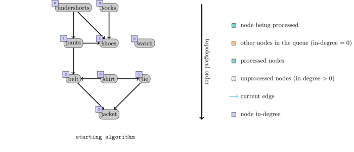

<!DOCTYPE html>
<html lang="en">
<head>
  <meta charset="UTF-8" />
  <meta name="viewport" content="width=device-width, initial-scale=1.0"/>
  <title>Salesforce | CRM</title>
  <link rel="stylesheet" href="https://cdnjs.cloudflare.com/ajax/libs/font-awesome/6.5.0/css/all.min.css">
<link rel="stylesheet" href="style1.css" />
</head>
<body>
  <div class="layout">
    <aside class="sidebar">
      <h2><i class="fas fa-cloud"></i> Salesforce Use Cases</h2>
      <ul>
        <li><a href="#intro">Introduction</a></li>
        <li><a href="#performance">Performance </a></li>
        <li><a href="#code">Code</a></li>
        <li><a href="#complexity">Time and Space Complexity</a></li>
        <li><a href="#ref">References</a></li>
      </ul>
    </aside>

    <main class="main">
      <h1 class="header">Workflow Automation with Dependency Tracking</h1>
<!--       <p class="subtitle">Utilizes efficient data structures to synchronize customer interactions and transactional records across systems in near real-time. Hash Maps and Queues provide fast access and order-preserving mechanisms to manage high-throughput CRM operations.</p> -->

      <div class="card" id="intro">
        <h3>Business Case</h3>
      <p>Workflows often involve tasks that depend on the completion of other tasks (e.g., approvals, notifications, data updates). Ensuring that all dependencies are resolved before executing a task is crucial for reliable automation.</p>
      </div>
      <div class="card" id="performance">
      <h3>Algorithm, Design Techniques, Performance Analysis:</h3>
     
      <p><strong>Challenges:</strong> Cyclic dependencies, dynnamic workflows, parallel execution.</p>
      <p><strong>Market Benefits:</strong> reliable automation, Reduced operational delays, Improved visibility</p>
      <h4>Algorithm, Design Techniques, Performance Analysis:</h4>
      <ul>
        <li><strong>Data Structure used:</strong> Topological Sort: Directed acyclic graph (DAG), Depth-first search (DFS)</li>
       </ul>
      </div>

      <div class="card" id ="code"> 
        <h3>Code</h3>
        <div class="code-block">
<pre>
#include <iostream>
#include <vector>
#include <queue>

using namespace std;

// Function to perform Topological Sort (Kahn's Algorithm)
// V: number of tasks
// adj: adjacency list representing dependencies (u -> v means u must be done before v)
bool topologicalSort(int V, vector<vector<int>>& adj, vector<int>& result) {
    vector<int> inDegree(V, 0);

    // Calculate in-degree (number of dependencies) for each task
    for (int u = 0; u < V; u++) {
        for (int v : adj[u]) {
            inDegree[v]++;
        }
    }

    queue<int> q;
    // Enqueue tasks with no dependencies (in-degree 0)
    for (int i = 0; i < V; i++) {
        if (inDegree[i] == 0) {
            q.push(i);
        }
    }

    int count = 0; // Count of tasks processed
    while (!q.empty()) {
        int u = q.front();
        q.pop();
        result.push_back(u);
        count++;

        // For each task dependent on u, reduce in-degree and enqueue if it becomes zero
        for (int v : adj[u]) {
            if (--inDegree[v] == 0) {
                q.push(v);
            }
        }
    }

    // If count != V, there is a cycle in the graph (circular dependency)
    return (count == V);
}

int main() {
    int V, E;
    cout << "Enter number of tasks (vertices): ";
    cin >> V;
    cout << "Enter number of dependencies (edges): ";
    cin >> E;

    vector<vector<int>> adj(V);

    cout << "Enter dependencies in format 'A B' meaning 'A must be done before B':\n";
    for (int i = 0; i < E; i++) {
        int u, v;
        cin >> u >> v;
        adj[u].push_back(v);
    }

    vector<int> topoOrder;
    bool isPossible = topologicalSort(V, adj, topoOrder);

    if (!isPossible) {
        cout << "Error: Workflow has cyclic dependencies! Cannot perform automation.\n";
    } else {
        cout << "Valid workflow execution order:\n";
        for (int task : topoOrder) {
            cout << "Task " << task << "\n";
        }
    }

    return 0;
}
</pre>
        </div>
      </div>

      <div class="card" id ="complexity">
        <h3>⏱️ Time and Space Complexity</h3>
        <table border="1" cellpadding="5" cellspacing="0">
  <thead>
    <tr>
      <th>Complexity Type</th>
      <th>Details</th>
    </tr>
  </thead>
  <tbody>
    <tr>
      <td>Time Complexity</td>
      <td>O(V + E). The outer loop runs V times and the inner loop runs E times.</td>
    </tr>
    <tr>
      <td>Space Complexity</td>
      <td>O(V). The queue stores all vertices of the graph.</td>
    </tr>
  </tbody>
</table>

      </div>

      <div class="card references" id="ref">
        <h3>📚 References</h3>
        <ul>
          <li>https://en.wikipedia.org/wiki/Topological_sorting</li>
            <li>https://cp-algorithms.com/graph/topological-sort.html</li>
         </ul>
      </div>

      <div class="nav-footer">
        <a href="6.html"> E-commerce Order  →</a>
      </div>
    </main>
  </div>
</body>
</html>
